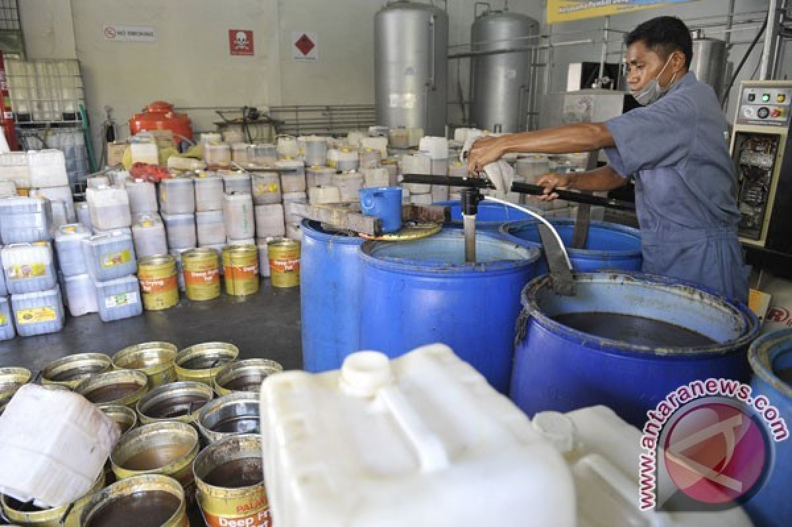
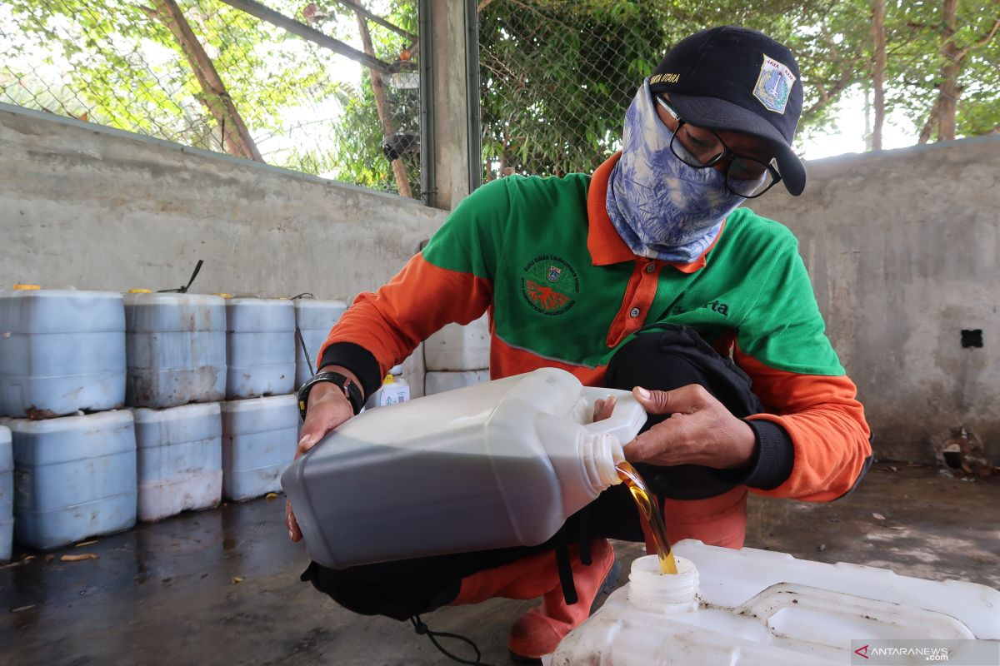
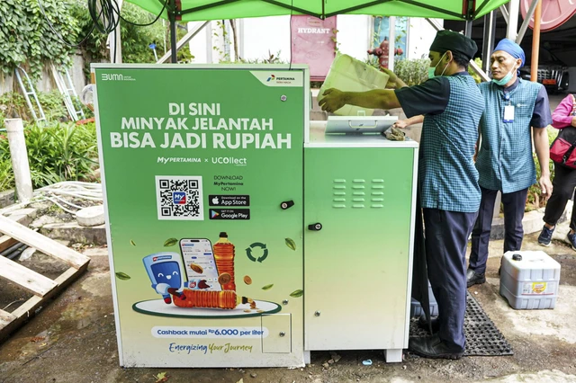
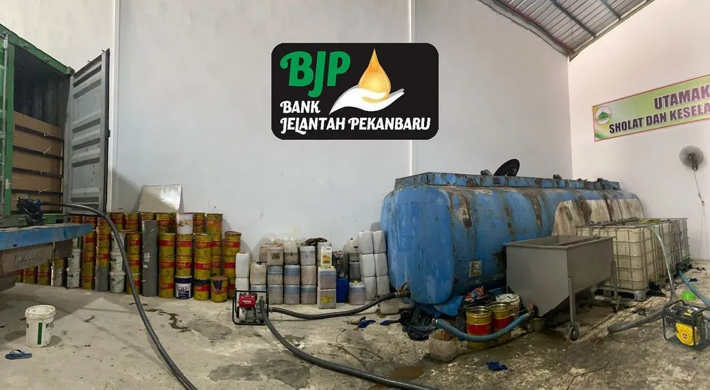
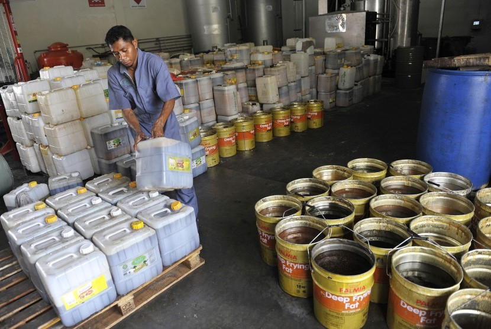

Katalog Berita & Solusi Pengelolaan Minyak Bekas
Halaman ini menyajikan berbagai solusi dan keberhasilan dari pengelolaan minyak bekas secara aman dan ramah lingkungan. Mulai dari pengumpulan, pemilahan, hingga proses daur ulang menjadi produk bernilai ekonomi. Dengan pengelolaan yang tepat, limbah minyak bekas dapat dikurangi sehingga tidak mencemari lingkungan.

PT EcoFuel Nusantara Beli Minyak Jelantah dari Warga Purwokerto
Perusahaan energi terbarukan PT EcoFuel Nusantara resmi menjalin kerja sama dengan warga Purwokerto untuk membeli minyak jelantah rumah tangga ini. Program ini bertujuan mengurangi pencemaran lingkungan sekaligus memberikan nilai ekonomi bagi masyarakat.
12 Januari 2026

Startup GreenCycle Tawarkan Harga Kompetitif untuk Minyak Bekas
Startup GreenCycle menghadirkan inovasi dengan membeli minyak jelantah dari UMKM dan rumah tangga dengan harga yang kompetitif. Program ini mendapat sambutan positif karena selain mengurangi limbah, juga menambah pennghasilan tambahan bagi masyarakat.
20 Januari 2026

Kolaborasi Perusahaan BioEnergi dalam Pengumpulan Minyak Jelantah
Perusahaan BioEnergi Indonesia bekerjasama dengan komunitas lokal dalam mengumpulkan minyak bekas secara terjadwal. Dengan sistem penjemputan langsung, masyarakat semakin mudah menjual minyak jelantah mereka tanpa harus membuangnya sembarangan.
22 Februari 2026

Minyak Jelantah Dibeli untuk Produksi Biodiesel Nasional
PT Nusantara BioFuel meningkatkan produksi biodiesel dengan membeli minyak jelantah dari berbagai daerah. Program ini mendukung energi alternatif nasional serta membantu mengurangi ketergantungan pada bahan bakar fosil.
28 Februari 2026

PT Angkut Hijau Ikut Terjun Membeli Minyak Jelantah
Perusahaan logistik PT Angkut Hijau mulai memperluas bisnisnya dengan membeli minyak jelantah dari rumah tangga dan restoran. Dengan jaringan distribusi yang luas, perusahaan ini mampu menjangkau berbagai wilayah untuk mengumpulkan minyak bekas. Minyak tersebut kemudian dikirim ke pabrik pengolahan untuk dijadikan bakan bakar alternatif.
10 Maret 2026

Program Tukar Minyak Jelantah Jadi Uang Digital
Perusahaan teknologi lingkungan EcoPay meluncurkan program inovatif di mana masyarakat dapat menukarkan minyak jelantah dengan saldo uang digital. Setiap liter minyak yang disetorkan akan dihargai sesuai kualitasnya dan langsung masuk ke aplikasi pengguna.
20 Maret 2026

Bank Jelantah Pekanbaru
Bank Jelantah Pekanbaru turut menjadi pemasok minyak jelantah yang telah dikumpulkan dari pada warga Pekanbaru yang akan dilakukan penjemputan oleh pihak UCOB yang nantinya minyak jelantah tersebut akan di distribusikan lagi ke perusahaan besar yang membutuhkan.
27 Maret 2026

PT Hijau Daun Energi Menjadi Salah Satu Peminat Minyak Jelantah
Program edukasi pengolahan minyak bekas mulai diperkenalkan kepada masyarakat sebagai bagian dari pelatihan lingkungan. Masyarakat akan diajarkan cara menyimpan, menyaring, hingga memanfaatkan minyak bekas agar dapat dimanfaatkan lagi oleh pihak Perusahaan PT Hijau Daun Energi.
20 Maret 2026